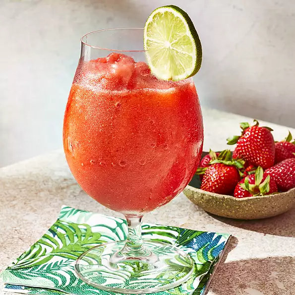

Strawberry Daquiri

A frosty blender full of strawberry-citrus slush.
You will enjoy this with or without the rum!
Ingredients
- 6 cups ice
- 1/2 cup white sugar
- 4 ounces frozen strawberries
- 1/8 cup lime juice
- 1/2 cup lemon juice
- 3/4 cup rum
- 1/4 cup lemon-lime flavored carbonated beverage
Directions
- In a blender, combine ice, sugar and strawberries.
Pour in lime juice, lemon juice, rum and lemon-lime
soda. Blend until smooth. Pour into glasses and
serve.
Original Recipe